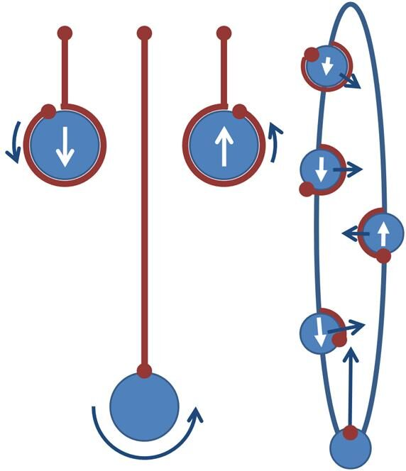
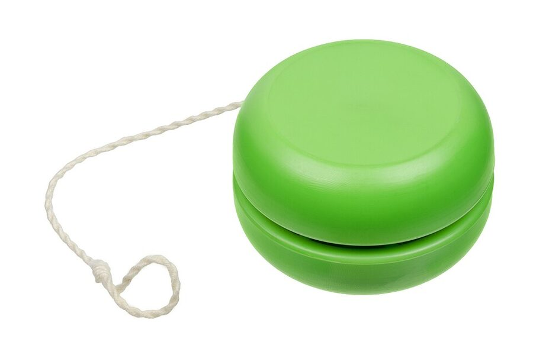
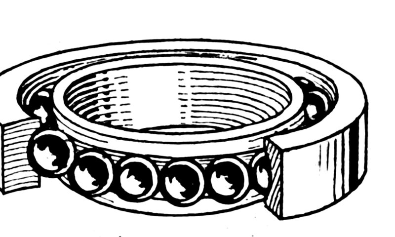
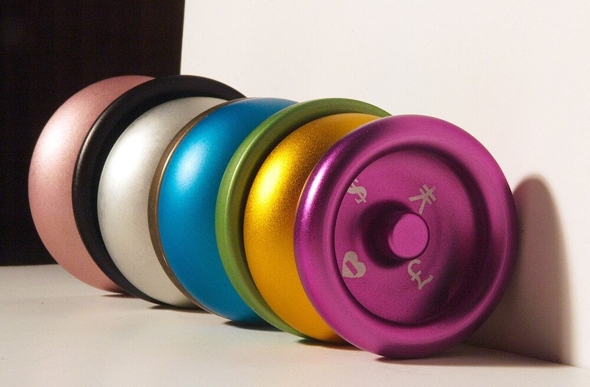

Physics · Design · Patents · Manufacturing · 3D Printing
A yo-yo is a string, an axle, and two discs. It is also a working lesson in energy, rotation, friction, materials, and manufacturing. This page walks through how yo-yos work, how they are designed and made, and how you can print your own at a library near you. Every fact links to a numbered source, so students can check it and cite it.
The slip string. Before Pedro Flores, strings were tied to the axle, so a yo-yo could only go up and down. Flores looped a twisted string around the axle instead, which lets the yo-yo spin freely at the bottom, or “sleep.”[5][6]
The axle. Old yo-yos were carved from one block of wood, axle included. Wood gives good friction but the string eventually cuts it, so most modern axles are aluminum or steel.[5]
The bearing. Ball bearings arrived in yo-yos in the early 1990s to cut friction while the yo-yo sleeps. A bearing has an outer race, an inner race, and balls that roll between them.[13][6]
The response system. Pads or other friction surfaces in the gap let the string grab so the yo-yo comes back. On modern yo-yos you “bind” to return it.[17][6]
A classic plastic yo-yo is about 1¾ ounces (49 g) and about 2⅝ inches (6.67 cm) across. Manufacturers usually differ by only a sixteenth of an inch or a sixteenth of an ounce.[5]
Part 2
The Physics and Math
Energy: falling turns into spinning
A yo-yo in your hand has two kinds of stored (potential) energy: the potential to fall, and, because the string is wound on the axle, the potential to spin. When you throw it, that stored energy becomes kinetic energy, the energy of motion.[1] A spinning yo-yo actually carries two kinds of kinetic energy at once: moving up or down, and spinning.[4]
M g h = ½ M v2 + ½ I ω2
v = ω r
v2 = 2 g h / (1 + I / M r2)
M mass · g gravity · h drop height · v speed · I moment of inertia · ω spin rate · r axle radius
Equations from UC Santa Barbara’s physics lecture demonstration.[2]
Read the last line this way: the bigger the moment of inertia I is compared with M r2, the slower the yo-yo drops, and the more of its energy goes into spin instead of speed. Because the string unwinds from a thin axle, r is small, so a yo-yo falls far more slowly than a dropped ball.[2][3]
The numbers are striking. In UCSB’s demonstration, a large brass yo-yo rolling down a ramp on its thin spindle had about 0.04 joules of energy in forward motion but about 2.94 joules in rotation.[2]
Moment of inertia and rim weight
Moment of inertia measures how hard it is to change an object’s spin. For a uniform disc it is I = ½ M R2, where R is the disc’s radius.[2][7] Moving mass outward raises it. That is why a bicycle wheel spins long and steady, and why yo-yo makers push weight to the outer edge, or rim.[5] More rim weight helps a yo-yo keep its spin and resist tipping over (precession).[11]
Angular momentum and sleeping
As the string unwinds, it puts torque on the axle, building angular momentum. At the bottom, the yo-yo cannot fall farther, but it keeps spinning because its angular momentum stays constant. That is the “sleep.” A spinning yo-yo resists changes to its axis, which is called gyroscopic stability.[1][8]
Friction is what finally stops it. It comes from the string rubbing the inside walls and the axle.[5][1] A tug adds energy back: pulling the string makes it grab the axle and wind up again, which is why you can keep a yo-yo going as long as you keep tugging.[4][1]
Friction trade-offs
A thinner axle means less friction and longer spins, but too thin and the yo-yo will not come back.[5]
A wider gap means less string rubbing and longer spins, but some rubbing is what makes a classic yo-yo spin and return. Thicker or thinner string acts like a narrower or wider gap.[5]
String twist keeps the loop from letting go, but too much twist grabs the axle and stops the sleep.[5]
Ball bearings cut friction. A cheap fixed-axle yo-yo spins 10 to 20 seconds; a good bearing yo-yo can spin 1 to 4 minutes.[6]
Some yo-yos use a centrifugal clutch: spring-loaded weights clamp the axle when the yo-yo spins slowly, then fly outward when it spins fast, letting it sleep, and clamp again to bring it back.[4][22]
How a yo-yo climbs back up
The return is not really about the tug. It is the split second of slack right after it. During that moment the string wraps around the axle two or three times until it wedges between the halves. From then on, the yo-yo’s spin turns into motion up the string. That is why a yo-yo spinning too slowly will not come back.[51]

Falling turns height into spin; at the bottom it sleeps; a tug lets the string grab and it climbs back up.brews_ohare, CC BY-SA 4.0, via Wikimedia Commons
Something has to grab the string during that slack moment. On a fixed axle, the axle itself does it. Plastic yo-yos add a starburst, a raised star shape around the axle, first proposed by a Duncan employee around 1950. Later designs cut grooves into the walls (reverse starbursts) or use rubber or silicone pads.[51] On unresponsive yo-yos, you wrap extra string into the gap yourself. That is a bind.[51][6]
Rim weight: it’s the distance from the axle
What raises the moment of inertia is mass far from the axle, not mass far from the gap. A wide yo-yo does not automatically spin longer.[57] Compare two yo-yos that are the same except for rim weight: the more rim-weighted one starts at a lower spin rate but spins longer.[58] Weight near the hub does the opposite: it makes speed changes easier, which helps looping.[52][53]
Radius of gyration
Engineers often describe how mass is spread with the radius of gyration: the distance from the axis where all the mass could sit and give the same moment of inertia.[81] Engineer Don Watson, who helped develop Tom Kuhn’s early ball-bearing yo-yos, wrote five Yo-Yo Physics pamphlets covering string friction, wobble, and a “yo-yo constant” linking spin speed to radius of gyration. They are free to read online.[55][56]
Try This: The Spool Puzzle
Set a yo-yo or big spool on a table with the string coming off the bottom of the axle. Pull the string gently and level with the table. Does it roll toward you or away? Most people guess wrong. Physics teacher Paul Hewitt explains why torque, not just force, decides.[65] Physicist Julius Sumner Miller’s classic TV lesson on rolling things includes a yo-yo.[60]
Go deeper: rolling-motion derivations in the free LibreTexts university physics text.[3]
Part 3
Design Principles
Designing a yo-yo means trading off spin time, stability, return, and feel.[5] These are the main choices.
Shape
Imperial (classic): narrow, with a thin string gap. Used today for old-school and looping tricks.[15][10]
Modified: narrow and rounded; the most popular shape for two-handed looping (2A).[10]
Butterfly: a very wide gap for string tricks, but it usually loops poorly. Favored for 1A, 3A, 4A and 5A.[10]
H-shape: mass concentrated at the rims so the profile looks like an H. It has more rim weight than other shapes and is very stable.[10][11][15]
Rim and wall details matter too. Straight or stepped walls keep the string from rubbing the yo-yo and losing spin.[16]

Imperial (classic): narrow and rounded, like most toy-store plastics.Evan-Amos, public domain, via Wikimedia Commons
Designers on the YoYoExpert forums describe the same balancing act:
Contest yo-yos are built to lose as little spin as possible while staying a comfortable size for today’s tricks. The shape near the bearing matters most, because that’s where the string rubs. The shape near the rims decides how much weight fits there and how it feels in the hand.[133]
Low walls and a wide gap hold more layers of string, but they make rejections and regenerations harder.[133]
Wider gaps snag less, but binds feel looser unless you use thicker string. Pad hardness matters too: soft pads grab more, hard pads less.[134]
Moment of inertia isn’t speed. It measures how hard the spin is to change. A high-inertia yo-yo slows down more slowly, so a clean player who keeps the string off the walls gets longer combos.[135]
The letter shapes: V, W, H, and O
Modern players describe most butterfly yo-yos with four letters, each named for what the profile looks like when you cut the yo-yo in half and look at it edge-on.[121][122] One Drop’s Benchmark line made the letters famous: the same yo-yo, at the same weight and size, sold in several profiles so players could feel the difference. The 2013 set came as V, O, and H; its “V” was really a stepped shape, so the 2014 set renamed it W and added a true straight V.[120][122]
Big catch zone, fast and easy to land; spins may be less powerful[121][122][123]
H
A steep extra cut in the middle of each half, pushing mass to the rims
The most rim weight, so the longest, most stable spins, but less maneuverable[121][122][11]
W (stepped)
A hybrid of V and H: a straight wall that steps out to a heavy rim
Strong spin with some center weight left for control; large catch zone[121][122]
O (organic)
A dome: put the two rims together and you get an O
Varies the most from design to design; often a smaller gap and high walls that bind easily and suit regens, comfortable in the hand, but harder to land on the string[121][124]
Other labels you’ll see: U-shape (inverse round), Z-shape, flat rim (like the Edge or Küntosh), and bell or “Orca” shapes.[125]
Do organics perform worse? Players disagree. One argument: high walls add inertia with less material, but also cost stability. Another: some makers skip organics because they chase competition performance, while others build them for players who want the old-school feel.[126]
Try it yourself: the Benchmark sets are the cleanest way to compare shapes, since everything else stays the same. They were never re-run, so look for them used.[122]
Smaller bearing, used in many Duncan and other yo-yos
C
¼″ × ½″ × ⅜″ (.250 × .500 × .187 in)
The main size for competition yo-yos, and the usual choice for DIY builds
D
5 × 11 × 5 mm
Some older SPYY and HSpin yo-yos

Inside a ball bearing: steel balls roll between an inner and an outer race.Pearson Scott Foresman, public domain, via Wikimedia Commons
Thick lubricant in a bearing makes a yo-yo more responsive for looping. A clean or thinly lubricated “dry” bearing is less responsive for string tricks.[13]
Density can vary, causing wobble; too light for modern shapes
Plastic (polycarbonate, ABS, Delrin/POM)
Cheap; molds into almost any shape; takes color
Molding can leave sharp edges or trapped bubbles
Aluminum (6061, 7075)
Denser than plastic; smooth; anodizes in many colors; 7075 resists dings
Costs more; dings and scratches; can “ring”
Titanium
Strong and scratch-resistant; allows more rim weight
Much more expensive and harder to machine
Bimetal (aluminum body, steel or brass rims)
Puts dense metal at the rim for more spin
More parts and cost

Anodized aluminum yo-yos. Machined metal allows precise shapes and rim weight.Sarah Jones, CC BY-SA 2.0, via Wikimedia Commons
Rare and odd materials: non-standard but interesting
Magnesium: strong, light, and precise to machine, but pricey and flammable as a powder. The Duncan Freehand Mg was the first magnesium yo-yo, followed by the General Yo Magnum.[12]
Heavy Gravity: YoYoJam’s plastic saturated with metal powder, which gave cheap molded rim weight. Rising costs ended it after the K-OS Extreme.[12]
Teflon (PTFE): the G Squared Ghost was machined from it, then discontinued partly because the hub was hard to mount securely.[12]
Delrin/POM: a machinable, ding-resistant plastic first developed as a metal substitute. Eric Wolff’s Alchemy Silk and Paul Yath’s Born Crucial Milk are machined from it.[12]
Steel and brass: too heavy for full-size yo-yos, so they show up in minis like the Mighty Flea and in bimetal rims.[12]
Titanium quirks: it sparks when you walk the dog on concrete, anodizes in fewer colors than aluminum, and tradition says a titanium yo-yo gets “Ti” in its name. Never put a titanium axle in a titanium yo-yo; the two can fuse together.[12]
Corian: countertop material, used only for prototypes and one-offs.[12]
Plastic tricks: “Sprite” bubbles come from adding a powder such as baking soda during molding; “Enyo” is polycarbonate with holographic foil flecks. Keep solvents away from polycarbonate, which can craze, yellow, and turn brittle.[12]
Rainbow wood: dyed plywood (“Spectraply”) was pioneered by Hummingbird and is used today by makers like TMBR and Spinworthy.[12]
Unusual bimetals: titanium with steel rims, Delrin with titanium rims, and 7068 aluminum with steel and cobalt-chrome rings.[12]
For every bearing size, pad, and string material, including the niche ones, see the Gear & Maintenance guide.
String
Yo-yo string is one long strand, looped around the axle and twisted back up to the finger. Cotton is traditional. Cotton-blend and synthetic strings such as rayon and nylon last longer and feel smoother, and string thickness changes how a yo-yo plays too.[54][5]
Part 4
How Yo-Yos Are Made
Hand-carved to factory-turned wood
Pedro Flores began by hand-carving yo-yos in California in the 1920s.[5][6] Early American yo-yos were carved from solid maple. Lumber was kiln-dried so it would not warp, cut to size, and shaped on a lathe against a master pattern, then stained or painted and lacquered.[5]
In 1946 Duncan opened a factory in Luck, Wisconsin.[6] From 1946 to 1965 Luck was the “Yo-Yo Capital of the World,” with nearly every family in town turning local hard maple into yo-yos.[18]
Mass production in plastic
Flambeau made Duncan’s plastic yo-yos from 1955 and bought the Duncan name in 1968.[6] The injection-molding line works like this:[5]
Plastic pellets feed into a heated barrel, where a screw pushes them forward as heater bands melt them evenly.
The melted plastic is pushed into a mold holding several discs and shells at once. The mold holds it about 17 seconds while water-cooled tubes chill it.
A separate machine cuts metal rod into axles.
Workers snap each disc and shell together while still warm to form a half.
A hot stamper presses the logo onto each half.
Workers set an axle between two halves, and an air press locks them together with a metal plate that sets the exact gap.
String is measured, looped on the axle, cut, tied, twisted, and wound on.
Yo-yos are shrink-wrapped onto skin cards for store racks.
Modern metal yo-yos: CNC lathes
Metal yo-yos are cut from bar stock on computer-controlled (CNC) lathes. In Tormach’s published aluminum yo-yo project, the parts are designed in Fusion 360 CAD/CAM and cut from 2.5-inch 6061 aluminum round in two setups: turning the outside, drilling and tapping an M4 hole for the axle, boring out the inside, and grooving the final profile. Response pads, a bearing, and the threaded axle finish the build.[17] Aluminum yo-yos are then finished by anodizing, blasting, polishing, or plating.[12]
Part 5
Patents and Trademarks
A patent protects an invention: how something works. A trademark protects a name or brand. The yo-yo has a famous story about both. Patents are public, so anyone can read them free on Google Patents.
James L. Haven and Charles Hettrick of Cincinnati: an improved “bandelore” of two metal discs. Guinness lists it as the earliest known yo-yo patent.[19][20]
Steve Brown’s freehand (5A) yo-yo, with the string tied to a counterweight instead of a finger, assigned to Duncan’s parent Flambeau.[25]
Filed but never granted
Published patent applications stay public even when they are never granted, so abandoned ideas are still there to read. Google Patents lists 67 U.S. yo-yo applications (class A63H1/30) that were published but not granted as of September 2026; a few are still pending. These are ones marked abandoned:[114]
Who filed them: Hans Van Dan Elzen (“Yohans”), owner of Playmaxx and YoYoFactory and a former world-record holder, is named on many of these applications, and on many granted patents too.[116][114]
Abandoned isn’t always the end. Michael O. Smith’s expanding yo-yo was abandoned once, then a continuation was granted.[107][115]
One Drop Side Effects were never patented. Introduced in 2010, they are swappable axle caps in aluminum or brass (spikes, domes, discs, even Lego pegs) that change a yo-yo’s weight and look.[117] Instead of a patent, One Drop let other companies design Side Effect-compatible yo-yos as long as they bought the Side Effects from One Drop; Anti-Yo, Eternal Throw, YoYoCommunity, Toxic Strings, and 3yo3 all did.[118][117]
A patent that shaped a style: Duncan held the patent on yo-yos sold packaged with a counterweight from 2000 to 2020.[119][25]
How “yo-yo” lost its trademark
Pedro Flores trademarked the name “yo-yo,” and Donald F. Duncan bought both his company and the name.[9] Duncan defended the trademark hard, forcing rivals to sell “return tops” and “Filipino twirlers.”[5] Then Duncan sued rival Royal Tops. In 1965 a federal appeals court ruled that “yo-yo” had become part of everyday speech, so Duncan could not own it.[26][6]How Products Are Made puts it simply: yo-yo was the name of the toy, like kite or baseball.[5] When a brand name becomes the everyday word for a product, lawyers call it a generic trademark.[27] In Canada, “Yo-yo” was registered as a trademark in 1932 and still is one.[6]
Part 6
Research Papers and Lab Experiments
Physicists and physics teachers use the yo-yo to study rotation. These papers and demos are good starting points for a report or science fair project. Teaching a class? See Yo-Yos in the Classroom for printable worksheets and lesson ideas.
Measure a yo-yo with a smartphone. Salinas and colleagues tied a smartphone to a homemade yo-yo, measured its spin with the phone’s gyroscope, checked it with video, and compared the results to theory. The paper was published in The Physics Teacher and is free on arXiv.[61] The free phyphox app reads your phone’s sensors for experiments like this.[78]
3D print a moment-of-inertia lab. Hazlett and Aragoneses built a 3D-printed wheel whose moment of inertia can change while its mass stays the same, to explore torque and rotational energy.[62]
Phones as physics labs. A guide to published experiments using the sensors in phones and tablets, from mechanics to astronomy.[63] Another classroom study used phone gyroscopes to model rotation.[64]
Lecture demonstrations. UC Santa Barbara’s yo-yo-down-an-incline demo includes full worked equations.[2] Harvard’s lecture demonstration program has a yo-yo demo too.[66]
A real data study, and what it teaches. One player ran a hypothesis test on whether bearing shape changes spin time. Other players pointed out that throws varied from about 40 to 100 seconds and the sample was small, so the result was hard to trust. That is a great lesson in experimental design: control your variables and repeat your trials.[59]
Part 7
Yo-Yos in Space Engineering
Some rockets spin a satellite to keep it steady while an engine fires. Afterward, the spacecraft needs to slow down. Engineers use a yo-yo de-spin: two cables with weights wrapped around the spacecraft. When released, the weights swing outward and carry away angular momentum, slowing the spin.[68][70]
NASA’s Dawn spacecraft used about 3 kilograms of weights on 12-meter cables to cut its spin from 46 RPM to 3 RPM in the opposite direction. Small weights have a big effect because they are far from the spin axis. The mechanism was invented at Caltech’s Jet Propulsion Laboratory.[68] The Institute of Physics has a teaching page on yo-yo satellites.[67]
DC Connection J. V. Fedor’s 1961 NASA technical note, “Theory and Design Curves for a Yo-Yo De-Spin Mechanism for Satellites,” came from NASA’s Goddard Space Flight Center in Greenbelt, Maryland. It is free to read online.[69]
Fluid Print Dynamics, started in 2014 by designer Jeffrey Pang: free-to-download models built around a brass spacer kit. The spacers fit C-size bearings and 19 mm response pads, and the kit includes a 20 mm axle and two acorn nuts. It is aimed at school projects and hobbyists.[35]
The YoYoMaker kit sells the metal “axis” parts for 3D printed yo-yos.[39]
Design your own
Change the shape, see how the moment of inertia changes, and test it.
Parametric Yo-Yo (OpenSCAD): builds imperial or butterfly halves, with optional cutouts and voids to vary the moment of inertia.[32]
Builders on the YoYoExpert forums post, print, and argue about these. All are free to download for personal prints.
Modern Yo-Yo by Dale Tubat: responsive or unresponsive, prints without supports, and takes standard bearings and pads. Dale also designs printed yo-yos sold by YoYoExpert, like Capsule, StupidWide, and Canopy 3D. Not for commercial use.[127][128][129] Watch DocPop’s interview with Dale on where printed yo-yos are headed.[132]
Return Bottoms on Printables: dozens of free yo-yo designs, from pocket throws to giant novelty yo-yos, by the maker behind the Sickburn Yo-Yo Workshop.[127]
Print at 100% infill, or close to it, for weight.[36]
You can print the bearing seat into the body instead of adding metal seats. Join halves with a bolt system; a screw threaded straight into plastic may strip.[36]
Builders advise a nut-and-bolt axle over metal-style axle systems on plastic yo-yos.[37]
For more rim weight, one builder designed hollow sections and pressed steel rings into the rims.[37]
Centering everything is the hard part, especially in simple tools like Tinkercad, so compare notes with other builders.[38]
The CNC build above lists the same parts you’ll need for a bearing yo-yo: response pads, a bearing, a threaded axle, and string.[17]
Bring your printed yo-yo to a DMV Throwers meetup to test it and get tips. Our Arlington meetups are in the same library as The Shop makerspace.
Part 9
Where to Print in DC and NoVA
These public spaces can print your file or teach you to print it. Policies change, so check the link or call before you go.
DC and Northern Virginia makerspaces with 3D printing
Staff print your submitted design in PLA ($0.05 per gram) or resin ($0.15 per mL), one active print per person. Free classes, and Open Lab drop-ins for makers 9 and up. Same building as our meetups.[42][43]
Member-supported hackerspace founded in 2008; open to anyone during events or when a member is present.[50]
Part 10
Easy Experiments to Try
Simple, low-cost activities a class can do in the days before a yo-yo demo. All you need is a yo-yo, some string, and a clear space.
Safety First
Throw only in an open area with no hazards or people nearby, and make sure the string is the right length for each student.[88] Science Buddies suggests a string that reaches from the ground to your belly button, and keeping yo-yos away from breakable things.[1]
The yo-yo pendulum
Hold the string about a foot above the yo-yo and gently swing it side to side. The time for one full swing, left to right and back, is called the period. Now hold the string farther from the yo-yo, then closer. What changes? This is the pendulum experiment in the Scouts’ official Yo-Yo Adventure.[88][87]
Go further: The American Physical Society’s “Swinging Yo-Yo” activity has students design their own test. Change the yo-yo’s mass with play dough, or change the string length, then collect data and graph it.[89] TeachEngineering has a pendulum activity for older students.[91]
How long can it sleep?
Time how long a yo-yo sleeps with three different string lengths, three throws each, and plot the results on a scatter plot. This is Science Buddies’ step-by-step project.[1] For scale: a forum-noted fixed-axle sleep record is 3 minutes 51 seconds, set by Tim Redmond with a YoYoJam DJ, a yo-yo designed for long sleeps.[136]
Ball vs. yo-yo drop race
Drop a ball and let a yo-yo unwind from the same height. Which reaches the bottom first? Some of the yo-yo’s energy goes into spinning, so less goes into falling.[1][2]
The spool puzzle
Pull a yo-yo’s string along a table from the bottom of the axle and predict which way it rolls. The answer comes down to torque.[65]
Spin like a skater
TeachEngineering’s middle school lesson uses figure skaters and spinning objects to show how moving mass in or out changes spin, the same idea as rim weight.[90]
Measure spin with a phone
For older students: the free phyphox app reads a phone’s gyroscope, the same approach researchers used to measure a yo-yo’s spin.[78][61]
Predict a yo-yo in space
Before you look it up, have students predict how a yo-yo would act without gravity. Then read the Air and Space Museum’s story of the toys that flew on Space Shuttle Discovery in 1985.[100]
Part 11
For Classrooms and Reports
Try an experiment
Science Buddies has a free, step-by-step project that tests how string length changes sleep time, using three yo-yos, a stopwatch, and a scatter plot. It suggests follow-ups too, like testing a yo-yo with a centrifugal clutch.[1]
Report and discussion starters
Why does moving weight to the rim make a yo-yo spin longer? Use I = ½ M R2 and the energy equation above.
Where does a yo-yo’s energy go? Compare its translational and rotational kinetic energy.
Compare wood, plastic, and aluminum yo-yos. Which would you choose, and why?
How did the 1965 court case change who could use the word “yo-yo”?
Read one patent in the table. What problem was the inventor solving?
Design and print a yo-yo. Change one variable, like rim weight or gap, and measure sleep time.
Predict which way the spool puzzle rolls, then test it. Explain the result with torque.
How do weights on cables slow a spinning satellite? Connect it to angular momentum.
Read the bearing-shape data study. How would you design a fairer experiment?
Bring the science to your school
“Science of Spin” school assemblies, developed by 1992 World Yo-Yo Champion Dale Oliver, teach friction, gravity, potential and kinetic energy, and distribution of mass with spinning toys, then run hands-on yo-yo clinics.[85] Locally, Springfield, VA performer Dick Stohr has taught the Spintastics Science of Spin program in schools and libraries.[86] DMV Throwers also visits schools and libraries. Contact us to plan a demo.
Across the curriculum
Social studies: the modern yo-yo came to America with Filipino immigrants. October is Filipino American History Month, a good time to read our Filipino Yo-Yo History page.[94]
History: trace the toy from ancient Greece to today on The Story of the Yo-Yo. National Yo-Yo Day is June 6, Donald Duncan’s birthday.[98]
Math and data: average repeated trials, make scatter plots, and discuss what makes an experiment fair.[1][59]
PE and coordination: yo-yo skills build eye-hand coordination, one of the Scouts’ stated takeaways.[88]
Engineering and art: design and 3D print a yo-yo using the engineering design process.[84] See Make Your Own.
Reading: find yo-yo history, trick, and story books on our Books to Find list.
Programs and field trips
Scouting America’s Yo-Yo Adventure covers yo-yo safety, stringing, the pendulum experiment, and basic tricks.[87][88] Duncan helped create it and also runs a school program with a science class activity on gravity, friction, rotational inertia, and energy transfer.[92][93]
In DC: the Smithsonian’s National Air and Space Museum.[95] The National Museum of American History holds the Duncan Family Yo-Yo Collection archives.[99]
Farther away: The Strong National Museum of Play in Rochester, NY, home of the National Toy Hall of Fame, and the National Yo-Yo Museum in Chico, CA.[96][97]
U.S. Patent 6,371,824. Brown, Stephen D. (assignor to Flambeau Products Corp.). “Yo-yo and method for using a yo-yo.” Google Patents. patents.google.com/patent/US6371824B1/en
Salinas, I., Monteiro, M., Marti, A. C., and Monsoriu, J. A. “Dynamics of a yoyo using a smartphone gyroscope sensor.” arXiv:1903.01343; published in The Physics Teacher 58(8), 2020. arxiv.org/abs/1903.01343
Hazlett, E., and Aragoneses, A. “A 3D printed wheel with constant mass and variable moment of inertia for lab and demonstration.” arXiv:1707.00032 (2017). arxiv.org/abs/1707.00032
Monteiro, M., and Marti, A. C. “Mobile Devices and Sensors for Physics Teaching.” arXiv:2206.12062 (2022). arxiv.org/abs/2206.12062
Fedor, J. V. “Theory and Design Curves for a Yo-Yo De-Spin Mechanism for Satellites.” NASA Technical Note D-708, Goddard Space Flight Center (1961). Internet Archive (DTIC). archive.org/details/DTIC_AD0260758
Google Patents. US20130165015A1, “Bearing unit, yo-yo using the same, ball bearing unit and yo-yo using the same” (priority 2011); legal status: abandoned. patents.google.com/patent/US20130165015A1/en